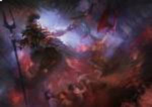
A mitologia grega contém um grande conjunto de mitos e lendas criados pelos gregos na época da antiguidade. Assim, a criação das narrativas fantásticas que englobam a mitologia grega foi a maneira encontrada pelos gregos para preservarem sua história. É importante ressaltar que a civilização grega estava baseada numa religião politeísta, ou seja, eles cultuavam diversos deuses. Atualmente, a mitologia grega não é mais seguida e cultuada pela população, sendo considerada uma religião extinta, sendo apenas estudada para fins históricos.
Os deuses gregos eram figuras imortais e antropomórficas. Ou seja, eram deuses com formas humanas e que também possuíam sentimentos humanos como o amor, o ódio, a maldade, a inveja, a bondade, egoísmo, fraqueza. Cada deus possuia uma função ou característica específica, e o deus que vamos ver hoje é Hades, deus do submundo.
Hades é um dos 6 filhos de Cronos e Réia, que foi engolido pelo seu pai ao nascer, como os seus irmãos: Deméter, Poseidon, Héstia, Hera e Zeus. Durante a Guerra dos Titãs, Hades foi liberto e junto com seus irmãos, derrotou Cronos e o mundo foi dividido entre os três irmãos homens, que seriam colocados na terra, no céu ou no submundo, por sorteio. Hades acabou ficando com o submundo, e virou o guardião de todas as almas dos mortos. Hades era uma figura assustadora, com uma personalidade impiedosa, mas não era maligno. Os gregos da antiguidade evitavam pronunciar seu nome, porque era motivo de irritação do Deus. Hades não tinha hobbies, preferia ficar no submundo sem interferir na vida dos mortais, mas possuia uma companhia fiel, o cérbero, que era um cachorro de três cabeças. Hades tinha uma paixão quente pela deusa Perséfone. Ele a enganou quando a levou pro submundo, fazendo com que ela comesse uma frutinha proibida, que fazia com que todos que a engolissem ficassem presos no submundo pra sempre. Eles tiveram 3 filhos: Zagreu, Macária e Melinoe.
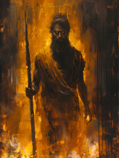
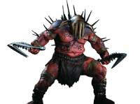
God of War II (2007) - game
No game, ele é representado como um deus vingativo e sádico, sendo obcecado por poder e pelo domínio do submundo. Ele é impiedoso e causa sofrimento eterno as almas condenadas.
Percy Jackson (2023) - série
Aqui ele é representado mais como um governante estrategista do que como um deus maligno ou cruel. Tem um visual humano e elegante.
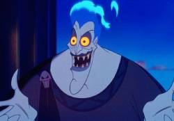
Hércules (1997) - filme animado
Aqui, devido ao tom do filme, Hades é carismático, cômico e fala cheio de energia, porém, é um vilão manipulador que busca dominar o Olimpo.
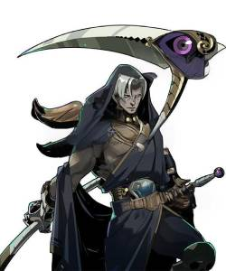
Hades (2020) - game
Aqui ele é representado de forma mais fiel a mitologia grega. Hades é um símbolo de ordem no jogo, ele é equilibrado e busca administrar o submundo sem crueldade ou sadismo. É rígido e autoritário com seus filhos.
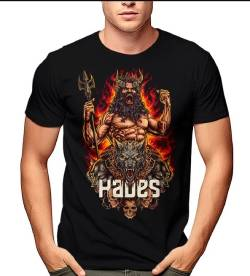
Camiseta
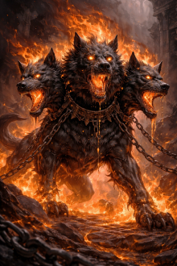
Cérbero
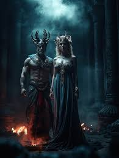
Hades e Perséfone
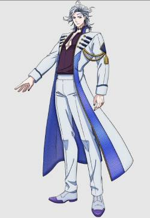
Anime
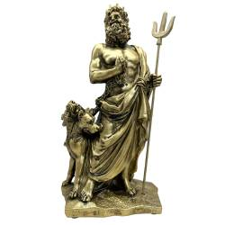
Estátua
Submundo
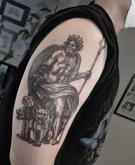
Tatuagem
Desenvolvido por Gabriel Mariano